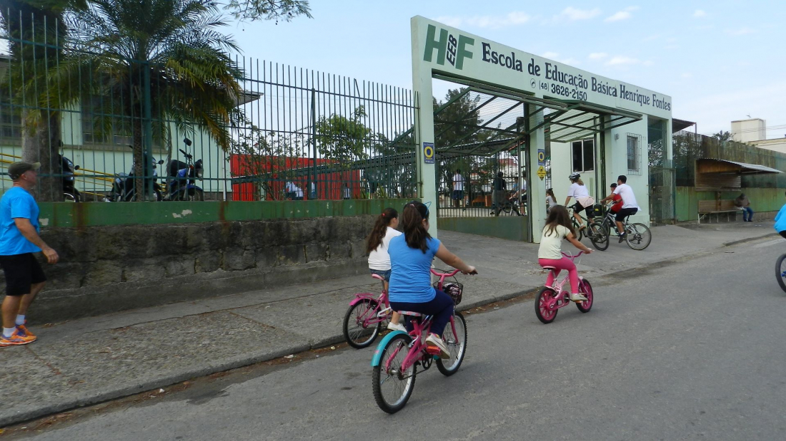

Fala galera! Bem-vindos à Rádio HF!
A rádio que toca o som da sua escola e dá voz à sua opinião!
A Rádio HF é o point oficial de comunicação da EEB Henrique Fontes! Feita por alunos e para alunos, nosso canal é o lugar onde a galera se encontra, descobre as novidades, curte as melhores tracks e fica por dentro de tudo que rola na escola.
Aqui, a gente não só informa, mas também entretém, inspira e conecta toda a comunidade escolar. Seja durante o intervalo, na hora do almoço ou em eventos especiais, a Rádio HF está sempre presente, levando informação, música e diversão para todos os cantos da escola.
Nossa missão? Dar voz aos estudantes, compartilhar talentos, destacar conquistas e fazer da nossa escola um lugar ainda mais legal и unido!
Nossa Programação
A Rádio HF traz uma programação diversificada, com conteúdos que vão desde as notícias importantes até as tracks mais ouvidas pelo pessoal. Confira alguns dos nossos quadros:
HF Notícias
Tudo que você precisa saber sobre os eventos, avisos e novidades da escola. Não perca os recados importantes e fique por dentro do que vai rolar!
HF Hits
O momento musical da galera! As músicas mais tocadas, pedidos especiais e as novidades do mundo da música. Manda seu pedido que a gente toca!
HF Entrevistas
Conversas descontraídas com professores, alunos destaque e personalidades incríveis. Descubra histórias inspiradoras da nossa comunidade!
HF Esporte
Tudo sobre os campeonatos, jogos e atividades esportivas da escola. A cobertura dos eventos e as dicas para manter o pique!
HF Humor
Piadas, curiosidades, memes e tudo para dar aquela descontraída no dia. Porque rir é o melhor remédio, né?
HF Talentos
Espaço para mostrar os talentos da galera! Música, poesia, arte - se você faz algo incrível, aqui é seu palco!
Faça Parte Dessa Galera!
Quer ser mais que ouvinte? Você pode ser estrela da Rádio HF! Estamos sempre procurando talentos para compor nossa equipe.
Não importa se você quer ser locutor, operador de som, repórter, produtor ou até mesmo criador de conteúdo - temos um lugar para você!
Participar da rádio é uma oportunidade incrível para desenvolver habilidades de comunicação, trabalho em equipe e criatividade, além de ser super divertido e render aquela experiência legal para seu currículo!
Quero Participar!Siga o Grêmio Estudantil!
Acompanhe as redes sociais do nosso Grêmio Estudantil e fique por dentro de tudo que rola na escola! Eventos, ações, novidades e muito mais você encontra nas nossas redes:
Grêmio no Instagram
Acompanhe as ações, eventos e iniciativas do Grêmio Estudantil da nossa escola!
Seguir no InstagramGrêmio no TikTok
Curta nossos vídeos divertidos, trends e conteúdos exclusivos no TikTok!
Seguir no TikTok